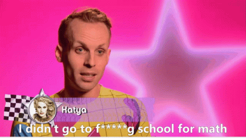
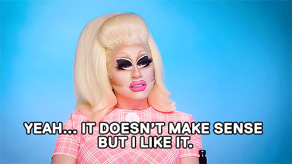
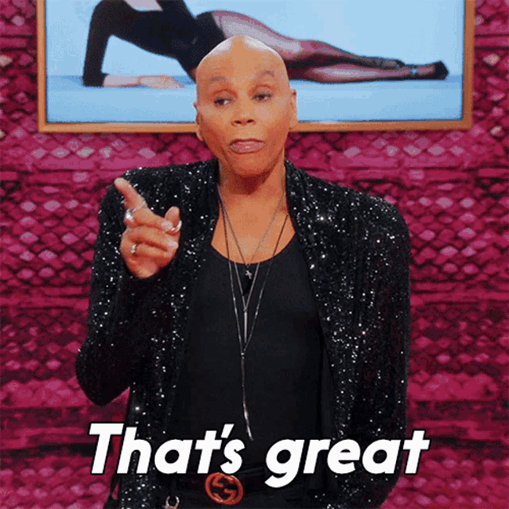

Le sens du code
C'est peut-être une déformation professionnelle "d'avant" : avant de commencer son terrain, l'anthropologue fait un "vide-sac" : il met à plat ses raisons, ses idées reçues, ses attentes. Je ne sais pas si ça me servira ici, mais dans le doute, j'ai tenté l'exercice.
Dès le moment où j'ai commencé à parler autour de moi de mon envie de reconversion professionnelle dans le code, les gens ont réagi très différemment.
Certaines personnes - évidemment plutôt celles déjà dans le métier - me posaient des questions techniques et précises :
- "Tu voudrais te spécialiser dans quel langage ?" ;
- "Tu voudrais te spécialiser dans quel domaine ? la sécurité informatique ou la santé, c'est vraiment intéressant en ce moment" ;
- "Tu veux devenir développeuse ou cheffe de projet ?".
Slow down, les gars, je vais déjà apprendre, après on verra : est-ce que quand vous avez commencé vos études, vous aviez la moindre idée de où vous vouliez aller (et si vous répondez oui à cette question, est-ce que vous y êtes aujourd'hui ? Et si vous répondez encore oui à cette question, vous êtes une licorne pour moi) ? Certes, je n'ai plus 18 ans. Mais vous avez compris l'idée.
Attention, je ne dis pas que ces questions étaient stupides, mais simplement que je n'avais pas les compétences pour y répondre au moment où elles m’étaient posées.
D'autres personnes, plus particulièrement mes amis ou ma famille, avaient peur de l'aspect reconversion (changer de métier) davantage que du domaine concerné (apprendre le code et la programmation). Ils me posaient des questions plus concrètes :
- "Mais tu vas payer comment ?" ;
- "Ça ne te fait pas peur de reprendre des cours et de tout recommencer à zéro ?".
Ca ira maman. On ne reprend jamais vraiment de zéro : je sais apprendre, je sais déjà d'autres choses. Et je suis grande : je vais m'organiser pour ne pas finir à la rue.
Attention, je ne dis pas que leurs peurs étaient stupides, mais simplement que je ne pouvais pas vraiment les contrôler.
Finalement, une poignée sur laquelle je ne m’arrêterai pas trouvait que c’était une mauvaise idée : ils pensaient que je n'avais pas les compétences, ou que j’étais arrivée si haut dans ma spécialisation (une thèse, sacrebleu) qu'il était idiot de quitter cette sorte de parachèvement professionnel. Eux, par contre, leurs questions étaient stupides.
Mais tous et toutes partageaient une même question : "Pourquoi ?", avec ses déclinaisons :
Pourquoi ce changement ? Pourquoi le code ? Quelles sont tes raisons, quel est le sens de tout ça ?
Grosso modo, le sens tout cela est double : d'un côté, il existe un sens lié à mon parcours personnel - le sens que cette reconversion dans le code en particulier à pour moi ; de l'autre, un sens lié à ce que je pense faire du code et de cette reconversion. Ce double sens est un continuum : le sens qui m'a amenée jusqu'ici, le sens qui, je l'espère, va me porter jusque là-bas.
LE SENS DU CODE : POURQUOI JE SWITCHE (dans le code en particulier)
Il serait faux de dire que j'ai toujours eu une affinité avec les maths, avec le code, avec le numérique ou l'informatique. Je ne geek pas depuis mes 14 ans dans ma chambre (même si j'ai eu une période Pharaon qui a un peu désespéré ma mère), je n'ai pas construit mon PC toute seule à 16 ans sur la base de tutos Youtube et mon intérêt pour les jeux vidéos s'est limité à quelques battles de Pokemons sur ma GameBoy. Bref, je ne cochais aucune des cases que je m'étais imaginé devoir cocher.
Au contraire, j'ai toujours vu mon parcours et mes intérets comme profondément anti innovation, anti numérique : j'ai fait des lettres au lycée, même pire, du latin et du grec que j'ai continué à l'université ; une fois specialisée dans les musées, j'ai continué à dédaigner les chantres du numérique (la 3D et les technologies immersives : très peu pour moi). Surtout, je ne me sentais pas du tout légitime à m'intéresser à ces domaines : c'était trop technique, trop loin de mes compétences.
Pourtant peu à peu, et ce majoritairement grâce à des rencontres, puis à des opportunités de travail, j'ai changé de regard. Non sur l'intérêt que je portais au numérique, mais sur ma croyance que je n'en avais aucun. Je pensais n'avoir jamais eu aucune affinité spécifique en maths : faux. Je pensais n'avoir aucune affinité en logique : faux (une prise de conscience en grande partie due aux explications de Marion Coville). Attention, je ne dis pas que pour se lancer dans la programmation, il faut un quelconque interêt en maths : mais de mon côté, cela a fait partie de mon parcours de réaliser que j'avais occulté certaines compétences.
En parallèle, mon activité professionnelle s'est développée : je suis allée au bout du bout d'un parcours universitaire avec ma thèse, j'ai obtenu la reconnaissance de mes pairs, j'ai crée ma propre structure, j'ai travaillé sur les sujets qui m'intéressaient, j'ai transmis mon savoir à des cohortes d'étudiants qui, je l'espère, transmettront à leur tour quelques bribes de tout ça. Le réservoir des idées liées aux musées s'épuise, les rencontres et réseaux commencent à se saturer, les possibilités d'évolution se retrécissent.
Tout ce processus (le changement de regard et le besoin de renouveau professionnel) a fait lâcher une digue. Si je ne me sentais toujours pas légitime à me plonger dans ce domaine, je me sentais capable d'essayer de l'approcher voire de le comprendre, même superficiellement.
C'est ce que j'ai commencé à faire, par petites touches integrées dans ce que je connaissais déjà : c'était plus rassurant. Tenter de créer un site web pour publier ma thèse en ligne ; m'abonner à des chaînes YouTube et des comptes Twitter ; découvrir un nouveau monde de ressources, de réseaux, de gens, de connaissances ; orienter mon activité professionnelle dans cette direction avec des enquêtes consacrées au numérique ; me documenter sur les problématiques du numérique aujourd'hui et découvrir que la programmation ouvrait un monde de possibles, mais aussi de questions.
LE SENS DU CODE : À QUOI ÇA SERT DE CODER ?
En effet, après avoir fait tout ça, je me suis surtout rendue compte que ce qui m'intéressait dans la programmation, c'était son pouvoir en tant qu'outil. Certaines personnes prennent peut-être du plaisir à coder pour coder. Ça ne m'intéresse que moyennement : ce qui m'enflamme, c'est ce que ce que je suis en train de faire va permettre : inclure davantage de gens dans la diffusion de l'information ? Permettre à des femmes de tracker leurs règles sans être trackée elles-mêmes ? Diversifier l'accès à la culture et à l'art ? J'ai plein d'idées de ce que j'ai envie de faire avec cet outil et, surtout, j'ai envie de connaître les idées des autres et de les aider.
J'ai vu les problèmes, imaginé des solutions, eu des envies... pour finalement en conclure que j'étais bien dépourvue une fois l'intérêt revenu : après ces premières incursions superficielles dans cet univers, après ces tentatives de les relier à ce que je connaissais déjà, il est arrivé un moment où mes compétences d'autodidacte se voyaient limitées. Et c'était d'autant plus frustrant que j'avais l'impression que c'était à ce moment que les choses devenait intéressantes. Mais je devais reconnaître mes limites : il me manquait trop de compétences pour changer quoi que ce soit, efficacement et de manière pertinente, pour proposer mes idées, pour réflechir plus loin et pour être ne serait-ce qu'un tout petit peu prise au sérieux..
Cette envie d'en apprendre davantage, associée au changement de regard sur ce domaine et à un constat d'une envie de renouveau professionnel m'amène donc ici, aujourd'hui : intégrer une école de programmation à la rentrée 2022. C'est le sens que le code a pour moi aujourd'hui : qu'il vienne pour tout bousculer ou simplement ajouter un nouvel outil dans ma boite à outils, il me permet de renouer avec une légitimité que je croyais impossible, de renouveler mes intérêts, de challenger mes acquis. Mais surtout, il me donne l'opportunité de continuer à créer, à mon échelle, un monde qui me ressemble davantage.
